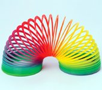
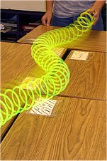
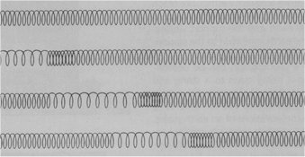
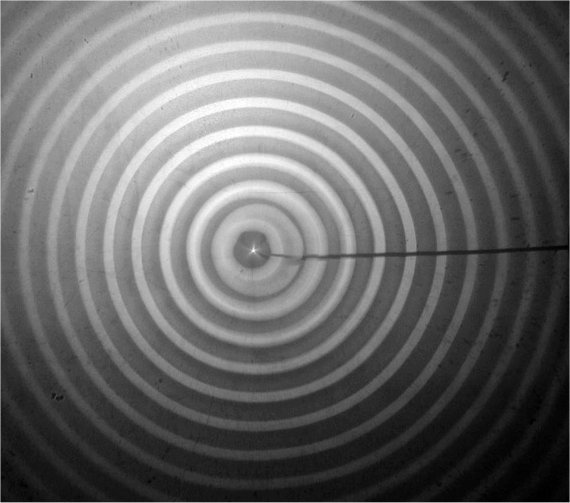

Unde mecanice
C.1. |
|
Propagarea unei perturbaţii |
 Activitatea experimentală 1C1−1
Activitatea experimentală 1C1−1
Investighează propagarea unei perturbaţii într−un resort slab, cu multe spire, cum sunt cele folosite ca jucării (figura 1C1−1).
|  |
Fig. 1C1-1. Resort slab, cu multe spire.
|
Pasul 1 Prinde un capăt al resortului (de marginea unei mese, cu bandă adezivă, sau de mânerul clanţei unei uşi). Ţine de celălalt
capăt şi extinde resortul la aproximativ 2−m.
Pasul 2 Trage lateral capătul pe care îl ţii şi observă ce se întâmplă.
Structura laterală a capătului resortului reprezintă o perturbaţie (o modificare a poziţiei capătului resortului). Spirele resortului fiind "legate" una
de cealaltă (fac parte din aceeaşi bandă continuă de material), deplasarea uneia provoacă deplasarea spirei vecine, care, la rândul ei, provoacă deplasarea
spirei următoare, ş.a.m.d.
În acest mod, perturbaţia se propagă din aproape în aproape, în lungul resortului (figura 1C1−2).
|  |
Fig. 1C1-2. Propagarea unei perturbaţii în lungul resortului.
|
 Numim undă propagarea din aproape în aproape a unei perturbaţii.
Numim undă propagarea din aproape în aproape a unei perturbaţii.
Când perturbaţia care se propagă este de natură mecanică (o deplasare), unda este numită undă mecanică.
În cazul din figura 1C1−2, perturbaţia este transversală faţă de direcţia de propagare.
Numim undă transversală unda pentru care direcţia perturbaţiei este perpendiculară pe direcţia de propagare.
Există şi alte orientări posibile ale direcţiei perturbaţiei faţă de direcţia de propagare a undei.
Activitatea experimentală 1C1−2
Investighează propagarea unei perturbaţii longitudinale.
Pasul 1 Ţine resortul extins, aşa cum ai făcut la activitatea experimentală precedentă. De data aceasta, ţine în mână, alăturate,
câteva spire de la capătul resortului.
Pasul 2 Eliberează brusc una dintre spirele pe care le ţii în mână. Observă ce se întâmplă.
Spira eliberată brusc loveşte spira vecină, care, la rândul ei, loveşte spira următoare, ş.a.m.d. De data aceasta, direcţia perturbaţiei coincide cu
direcţia de propagare a undei (figura 1C1−3).
|  |
Fig. 1C1-3. Propagarea unei perturbaţii longitudinale.
|
Numim undă longitudinală unda pentru care direcţia perturbaţiei coincide cu direcţia de propagare.
Toate particulele care pot interacţiona sunt susceptibile de a transmite perturbaţii. Dacă atingi suprafaţa liniştită a apei dintr−un vas larg, vei
perturba moleculele apei din zona atingerii. Deplasarea acestora va determina deplasarea vecinelor acestora, de jur−împrejur, ş.a.m.d.
Pe suprafata apei este vizibilă propagarea perturbaţiei în toate direcţiile, începând cu locul perturbaţiei iniţiale (figura 1C1−4).

Fig. 1C1-4. Propagarea unei perturbaţii pe suprafaţa apei.
Locul geometric al punctelor la care tocmai a ajuns perturbaţia este un cerc a cărui rază creşte în timp.
Numim front de undă locul geometric al punctelor la care a ajuns o undă, la un moment dat.
În dreptul frontului de undă are loc un transfer de energie între particulele deja perturbate şi cele care urmează a fi perturbate, ca în cazul oscilatorilor
cuplati. Astfel, o undă transferă energie din locul unei perturbaţii iniţiale, către toate particulele care pot interacţiona.
Toate corpurile sunt alcătuide din particule care pot interacţiona. Orice perturbare a vreunei particule determină transferul de energie, din aproape în
aproape, către toate particulele care interacţionează.
Aşadar, o undă reprezintă o modalitate de a transfera energie la distanţă, fără transport de particule!
 Provocarea 1C1−1
Provocarea 1C1−1
O minge pluteşte pe apa liniştită a unei piscine, aproape de centrul acesteia.
Ai putea pune mingea în mişcare, atingând doar suprafaţa apei de la marginea piscinei?